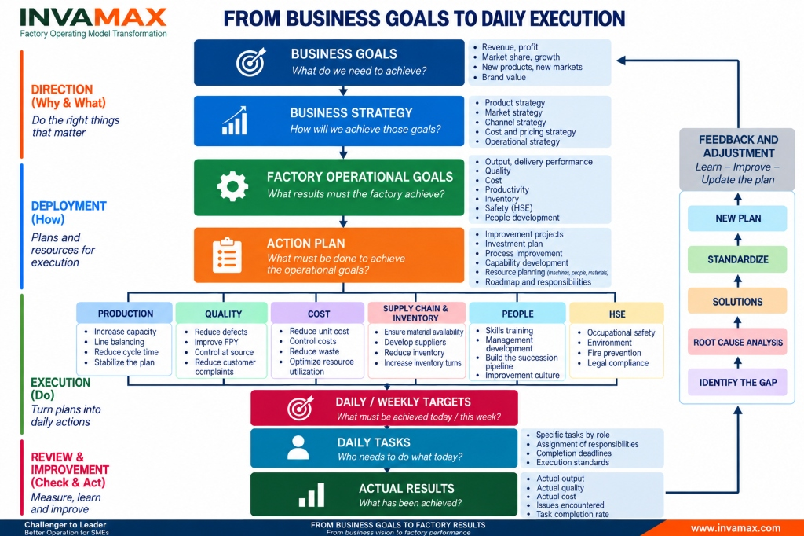

Many manufacturing companies do not lack goals.
Revenue must increase. Profit margins must improve. Market share must expand. New products must launch faster. Quality must be better. Costs must be reduced.
Companies also have strategies to achieve those goals.
But as we move from the boardroom down to the factory floor, a critical question emerges:
“How will those goals and strategies change the daily work on the factory floor?”
This is exactly the gap many companies face:
The gap from Strategy to Execution.

1. The factory cannot directly “execute strategy”
Suppose a company sets a goal of 30% revenue growth for the coming year.
This is a Business Goal.
The leadership team can choose various strategies: opening new markets, increasing market share, developing new products, adjusting pricing, expanding distribution channels, or improving cost competitiveness.
But a supervisor on the factory floor cannot simply receive a task like:
“Today, let's execute the 30% growth strategy.”
Strategy must be translated into specific operational requirements.
If production volume is expected to increase by 30%, the factory must answer:
- Can the current capacity meet this?
- Where is the bottleneck?
- Do we need to invest in new machines, or can we increase capacity through improvements?
- Is the current workforce sufficient?
- Can suppliers handle the new volume?
- How does inventory need to change?
- Can quality be maintained when volume increases?
- Can the current management system withstand a larger scale?
At this point, a business goal begins to become Factory Operational Goals.
2. Business Goals must be translated into Factory Operational Goals
A factory should not operate in isolation from the business strategy.
Goals such as growth, profit, market share, or new product development must ultimately be translated into specific requirements for:
Production → Quality → Cost → Supply Chain & Inventory → People → HSE.
If the competitive strategy is based on fast delivery, the factory cannot just set an OTD (On-Time Delivery) KPI.
The company must review the entire system:
Planning → Material → Capacity → Production Flow → Inventory → Supplier → Daily Management.
If the strategy is to develop a premium product segment, the requirements for the Quality System, Process Capability, and Standard Work must also change.
If the strategy is cost competition, the question is not just:
“By what percentage must we reduce costs this year?”
But must become:
“What operational capabilities must change to create a better cost structure?”
That is the difference between handing down KPIs to the factory and deploying strategy into the operating system.
3. Operational goals are still not execution
Suppose the factory has determined:
- Increase capacity by 20%
- Reduce defects by 30%
- Reduce inventory by 15%
- Increase productivity by 10%
- Improve delivery performance
Those are still just goals.
The next step must answer:
“What do we need to change to achieve those results?”
This is the Action Plan layer.
Including:
- Improvement Projects
- Investment Plan
- Process Improvement
- Capability Development
- Resource Planning
Every plan must have:
Owner → Target → Timeline → Resource → Review Mechanism.
Without these elements, an Action Plan easily becomes a mere to-do list rather than an execution system.
4. Strategy only becomes reality when it reaches daily work
An annual plan must be deployed down to:
Annual Goals
↓
Monthly / Weekly Targets
↓
Daily Targets
↓
Daily Tasks
Ultimately, it must answer:
“Who has to do what today?”
For example:
Growth goal → Capacity increase requirement → Cycle time reduction project → Weekly production target → Specific tasks for today.
That is when Strategy turns into Execution.
If this chain of alignment does not exist, the company can easily fall into a situation where:
- The CEO talks about strategy.
- The Factory Director talks about KPIs.
- The Supervisor talks about production output.
- The Worker talks about today's tasks.
Everyone is busy.
But not necessarily everyone is moving in the same direction.
5. Plan – Actual – Gap: Where the management system begins to work
In operations, there is always a gap:
PLAN ↔ ACTUAL
The key is not to build a factory without problems.
The key is to build a system capable of detecting and resolving problems quickly.
When Actual differs from Plan:
Identify the Gap
↓
Root Cause Analysis
↓
Solutions
↓
Standardize
↓
New Plan
For example:
Target: 10,000 units/day.
Actual: 8,700 units/day.
A weak management system stops at:
“Today we only reached 87% of the plan.”
A good system must continue with:
What is the gap? → What is the root cause? → Who handles it? → When will it be completed? → Is the solution effective? → Does it need to be standardized?
Daily Management, therefore, should not be just a meeting to report numbers.
It must be a mechanism to turn abnormalities into management action.
6. Feedback Loop: Execution must feed back into strategy
The model does not end at Actual Results.
Actual results must feed back into the system through Feedback & Adjustment.
Learn → Improve → Update the Plan.
Sometimes the problem is not in execution.
- The plan might be wrong.
- The initial assumptions might be wrong.
- Actual capacity might differ from expectations.
- The market might have changed.
- Resources might be insufficient.
In such cases, the company must be able to learn, adjust, and create a new plan.
At a higher level, operational lessons might even compel the business to adjust its Business Strategy or Business Goals.
The system, therefore, is not a straight line.
It is a continuous management loop.
7. The gap between Strategy and Execution is an Operating Model problem
When a business encounters these situations:
- Strategy exists but deployment is slow
- Top-level goals fail to reach the shop floor
- All departments meet KPIs but overall results fall short
- Many meetings but problems keep recurring
- The CEO has to intervene deeply in operations
- Management relies on a few key individuals
- Plan and Actual are reported but trigger no action
The problem does not necessarily lie in the quality of the strategy.
It may lie in the Operating Model sitting between the strategy and the people executing it.
A good Factory Operating Model must create alignment:
Strategy → Goals → Process → Organization → Resources → Management System → Daily Execution → Results → Learning.
This is also why INVAMAX does not view Factory Transformation purely from the perspective of Lean, Kaizen, or Digital Transformation.
Lean is a tool. Digital is a tool. AI is a tool.
What needs to be built first is an operating model capable of systematically turning business goals into actual results.
A Question for CEOs and Factory Directors Choose one of the top three most important business goals for your company this year. Then walk step-by-step down through:
Business Goal → Business Strategy → Factory Operational Goal → Action Plan → Weekly Target → Daily Task
And ask:
“What are the people on the factory floor doing differently today to help the business achieve this goal?”
If you can point to a clear chain of alignment, your execution system is working.
If the connection breaks down at any layer, that is very likely where the business needs to rebuild its management foundation.
INVAMAX | Factory Operating Model Transformation
From business goals to factory results.
From strategy to daily execution.
INVAMAX partners with manufacturing companies to assess, design, and transform their factory operating model — building the execution capabilities required to achieve business goals and enhance competitiveness.